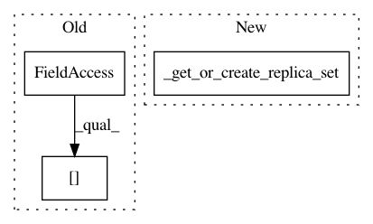

cb771f263d358cc7a4ad2447cb5de58ff7a59d5c,python/ray/serve/router.py,Router,assign_request,#Router#Any#,233
Before Change
result_ref = await self.backend_replicas[chosen_backend
].assign_replica(query)
for backend in shadow_backends:
await self.backend_replicas[backend].assign_replica(query)
self.num_router_requests.record(1, tags={"endpoint": endpoint})
After Change
result_ref = await self._get_or_create_replica_set(
chosen_backend).assign_replica(query)
for backend in shadow_backends:
(await self._get_or_create_replica_set(backend)
.assign_replica(query))
self.num_router_requests.record(1, tags={"endpoint": endpoint})
In pattern: SUPERPATTERN
Frequency: 3
Non-data size: 3
Instances
Project Name: ray-project/ray
Commit Name: cb771f263d358cc7a4ad2447cb5de58ff7a59d5c
Time: 2021-01-28
Author: architkulkarni@users.noreply.github.com
File Name: python/ray/serve/router.py
Class Name: Router
Method Name: assign_request
Project Name: ray-project/ray
Commit Name: cb771f263d358cc7a4ad2447cb5de58ff7a59d5c
Time: 2021-01-28
Author: architkulkarni@users.noreply.github.com
File Name: python/ray/serve/router.py
Class Name: Router
Method Name: _update_backend_configs
Project Name: ray-project/ray
Commit Name: cb771f263d358cc7a4ad2447cb5de58ff7a59d5c
Time: 2021-01-28
Author: architkulkarni@users.noreply.github.com
File Name: python/ray/serve/router.py
Class Name: Router
Method Name: _update_replica_handles